| gpt-image-2.5-sunburst-fal | nano-banana-2.1 | |
|---|---|---|
| walkway | 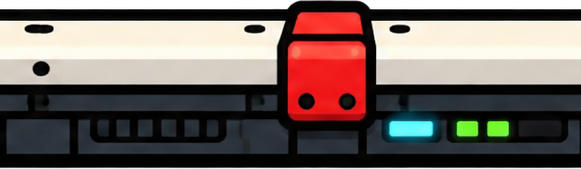 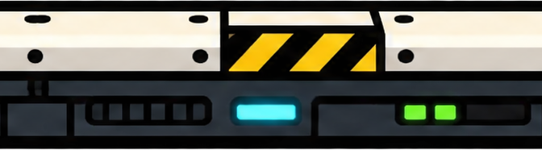 ok, costura top_a:x fail→ok, costura top_b:x fail→warn · US$ 0,17 · original · json     ok, costura top_a:x warn→ok, costura top_b:x ok · US$ 0,17 · original · json | - |
| substructure | 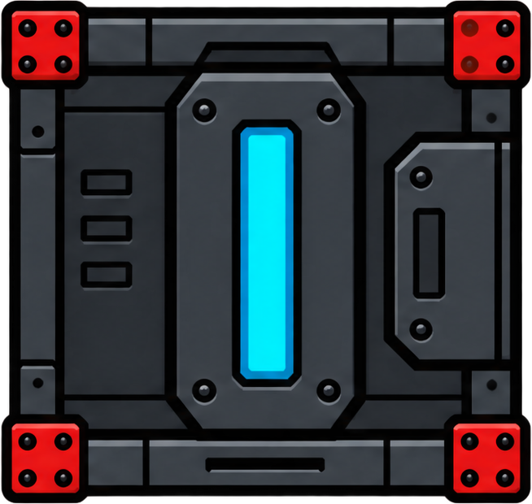 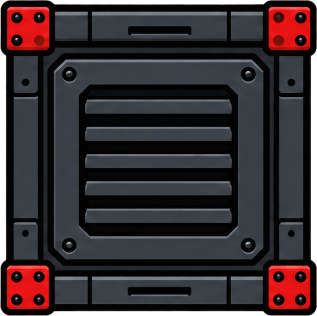 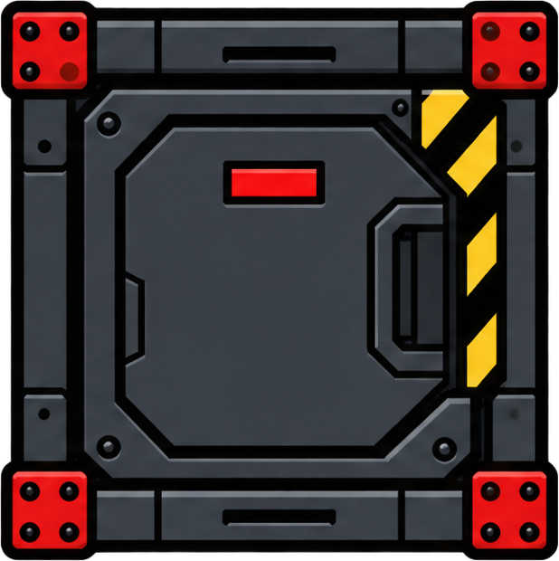 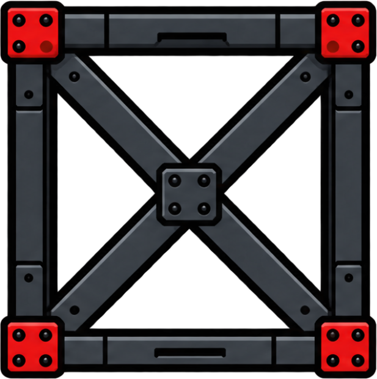 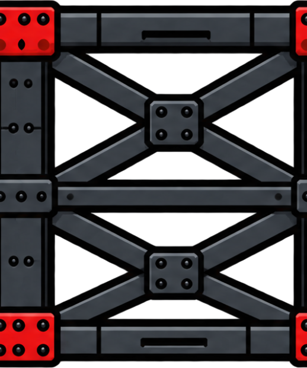 warn, costura truss_a:x warn, costura truss_a:y ok, costura truss_b:x fail→ok, costura truss_b:y ok, costura column:y warn→ok, costura machine_a:x ok, costura machine_a:y ok, costura machine_b:x warn, costura machine_b:y ok, costura machine_c:x ok, costura machine_c:y ok · US$ 0,17 · original · json el contenido toca el borde (bottom): puede estar cortado       warn, costura truss_a:x ok, costura truss_a:y ok, costura truss_b:x ok, costura truss_b:y ok, costura column:y fail→ok, costura machine_a:x warn→ok, costura machine_a:y ok, costura machine_b:x ok, costura machine_b:y ok, costura machine_c:x ok, costura machine_c:y ok · US$ 0,17 · original · json el contenido toca el borde (bottom): puede estar cortado | - |
| bridge |   ok, costura bridge_a:x ok, costura bridge_b:x ok · US$ 0,17 · original · json 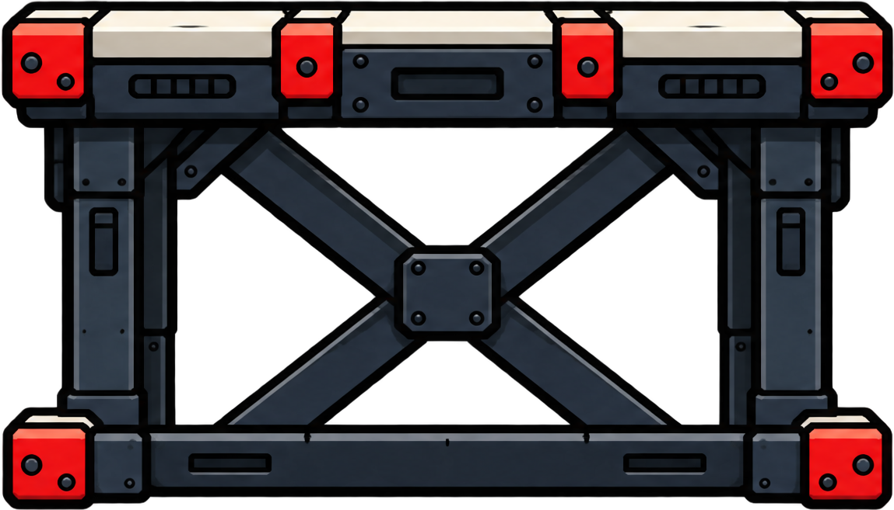 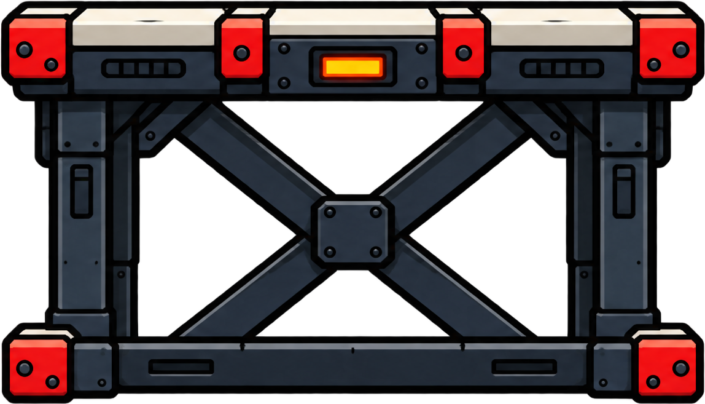 ok, costura bridge_a:x ok, costura bridge_b:x ok · US$ 0,17 · original · json | - |
| platforms | 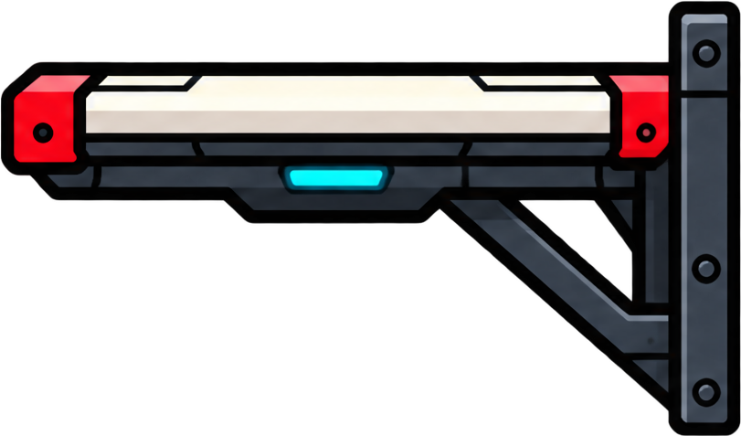 ok · US$ 0,17 · original · json    | - |
| pipes | 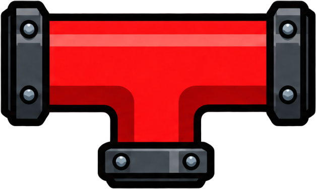 ok, costura thick:x ok, costura thin:x fail→ok · US$ 0,17 · original · json        ok, costura thick:x fail→ok, costura thin:x ok · US$ 0,17 · original · json | - |
| landmarks |     warn · US$ 0,17 · original · json el contenido toca el borde (left): puede estar cortado 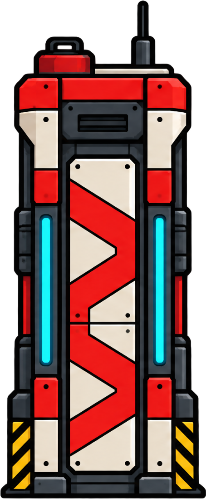 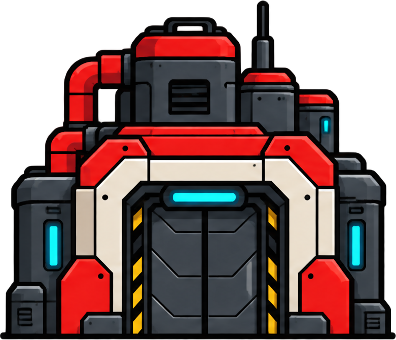 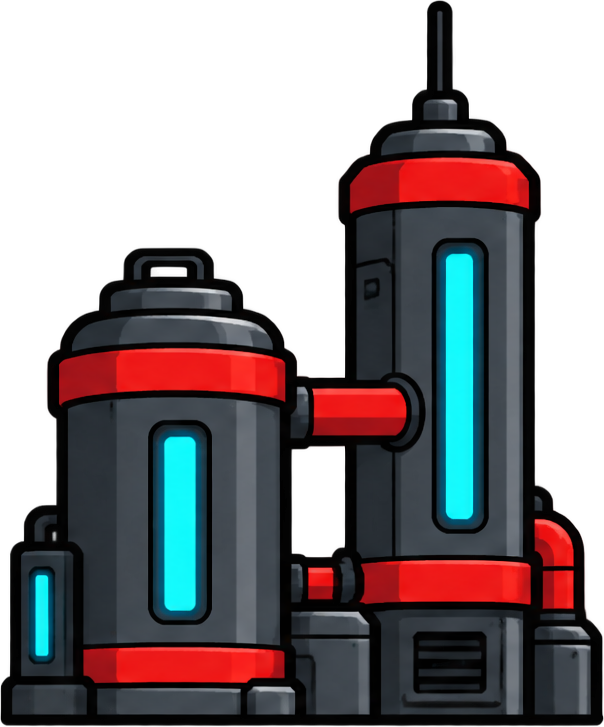 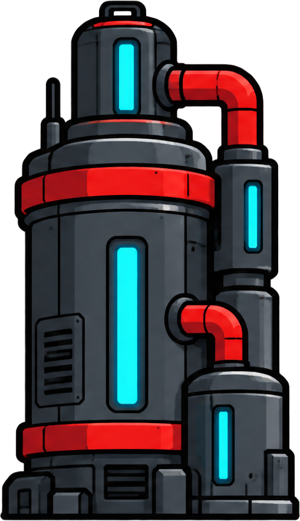 | - |
| small_props |       ok, costura wall_a:x fail→ok, costura wall_a:y fail→ok, costura wall_b:x ok, costura wall_b:y fail→ok · US$ 0,17 · original · json 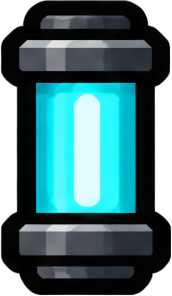 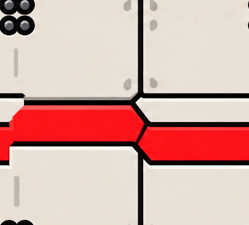 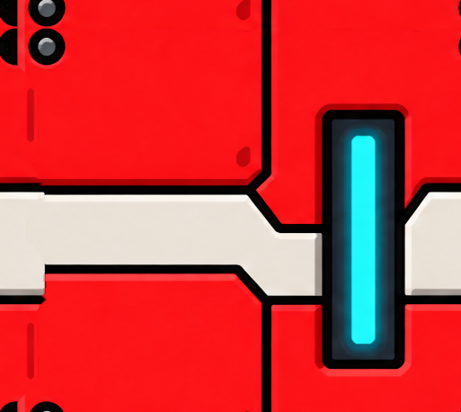 ok, costura wall_a:x fail→warn, costura wall_a:y fail→ok, costura wall_b:x fail→ok, costura wall_b:y fail→ok · US$ 0,17 · original · json | - |
| sky | - | ok, costura x fail→ok · US$ 0,06 · original · json  ok, costura x warn→ok · US$ 0,06 · original · json  |
| far | - | 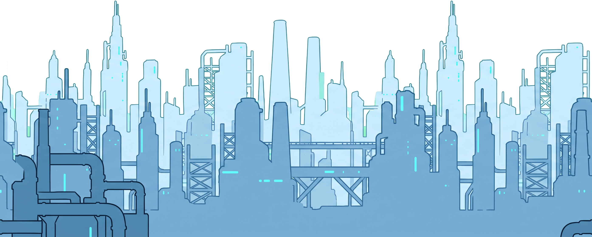 ok, costura x warn→ok · US$ 0,06 · original · json  ok, costura x ok · US$ 0,06 · original · json  |
| mid | - |  ok, costura x warn→ok · US$ 0,06 · original · json 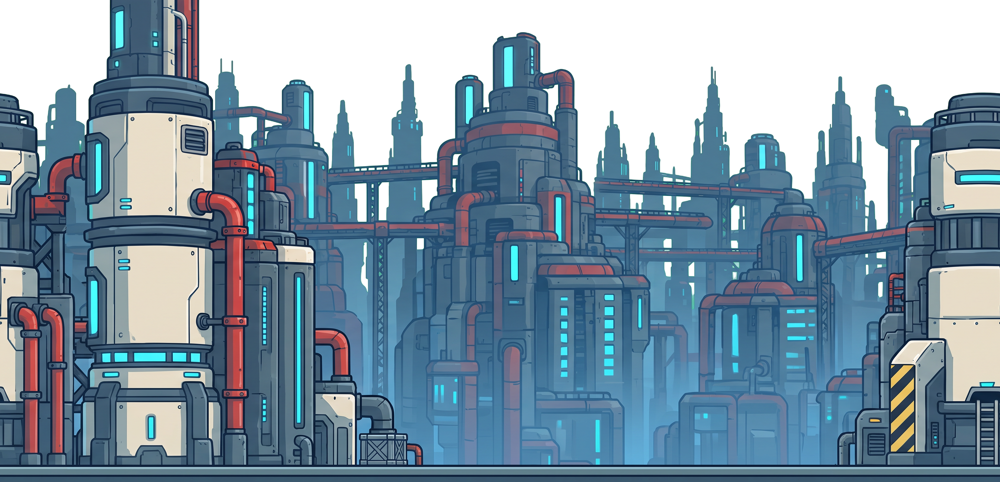 ok, costura x warn→warn · US$ 0,06 · original · json  |
| near | - | 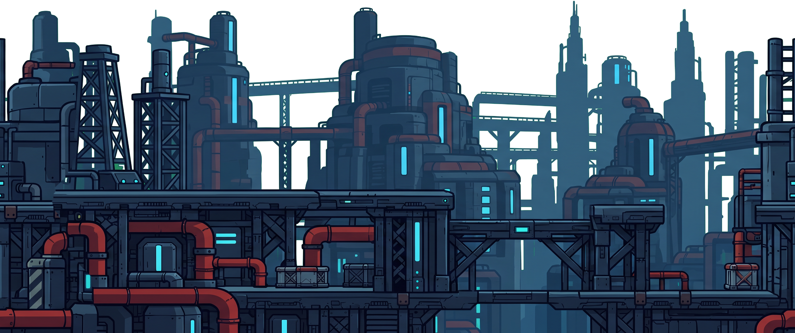 ok, costura x fail→ok · US$ 0,06 · original · json  ok, costura x warn→ok · US$ 0,06 · original · json  |